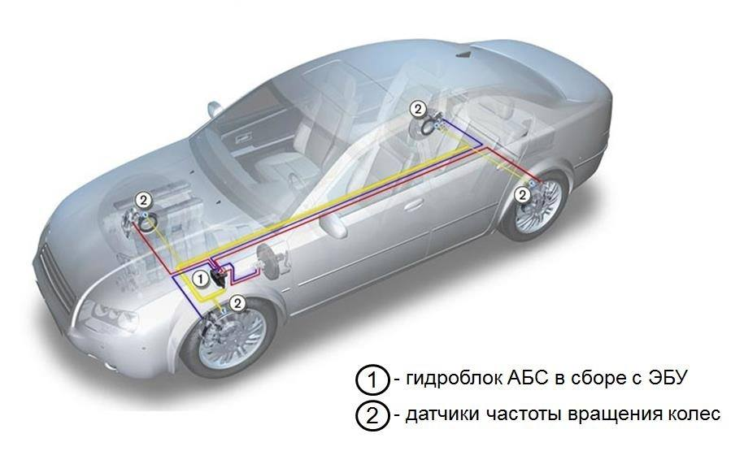

Устройство и основные компоненты системы

В состав антиблокировочной тормозной системы входят:
- Датчики частоты вращения колес. Датчики работают на основе эффекта Холла и установлены на ступице каждого колеса. Они определяют скорость вращения колес и передают сигнал в блок управления АБС.
- Блок управления. Основная функция электронного блока управления (ЭБУ) – обеспечить работу тормозной системы в наиболее эффективном и стабильном диапазоне, при котором тормозная сила будет максимальна, а колеса автомобиля не будут заблокированы. Для этого блок управления проводит непрерывные вычисления изменения скорости вращения колес (замедления). На основании данных показателей формируются управляющие сигналы для исполнительных устройств: насоса и электромагнитных клапанов гидравлического блока.
- Гидравлический блок. Этот компонент ABS является исполнительным устройством. Гидравлический блок включает в себя электромагнитные клапаны (впускные и выпускные), гидроаккумуляторы, кулачковый насос с электрическим двигателем, демпфирующие камеры.
Электромагнитные клапаны управляют процессом торможения, каждый в своем контуре. Для каждого рабочего тормозного цилиндра предполагается пара клапанов (один впускной и один выпускной).
Гидроаккумуляторы предназначены для ускорения сброса давления в тормозном контуре. Они наполняются тормозной жидкостью во время открытия выпускных клапанов.
Далее в работу включается кулачковый насос, который откачивает тормозную жидкость обратно в главный тормозной цилиндр. Именно по этой причине при работе системы АБС водителем ощущаются толчки в педаль тормоза.
Демпфирующие камеры гасят колебания жидкости при работе системы. Так как в автомобиле два контура гидропривода тормозной системы, в гидравлический блок, как правило, интегрируют два аккумулятора давления и две демпфирующие камеры.